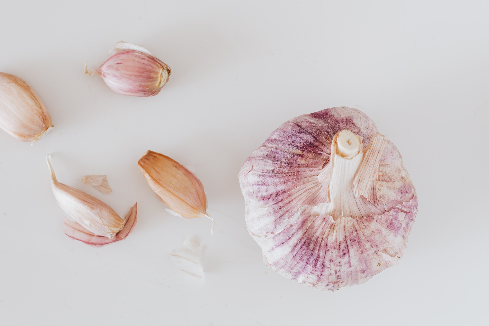

Fotos de alho


Historiadores apontam que o surgimento de algumas lendas sobre vampiros coincide com uma epidemia de raiva que matou centenas de pessoas na Europa do século XVIII. A raiva tem sintomas que correspondem com algumas das características dos famosos bebedores de sangue, a exemplo de insônia e sensibilidade à luz. Além disso, outro sintoma comum da doença, a rigidez da laringe, pode ser causado por cheiros fortes como o do alho. Ou seja, é possível que essa seja a origem do mito que vampiros não gostam dessa hortaliça.
No antigo Egito, além de alimento, o alho era utilisado em cerimônias reliiosas. Sacerdotes jogavam o alimento no fogo a fim de obter saúde para os fiéis. Na Grécia, entretanto, a hortaliça não era muito apreciada. Tanto, que na Odisséia, poema épico de Homero, Ulisses comeu alho para afastar a feiticeira Circe e, dessa forma, evitar que ela o transformasse em um porco! Na Roma antiga, era consumido pelos soldados em grandes jornadas, porém, repudiado pelos nobres em virtude do cheiro.